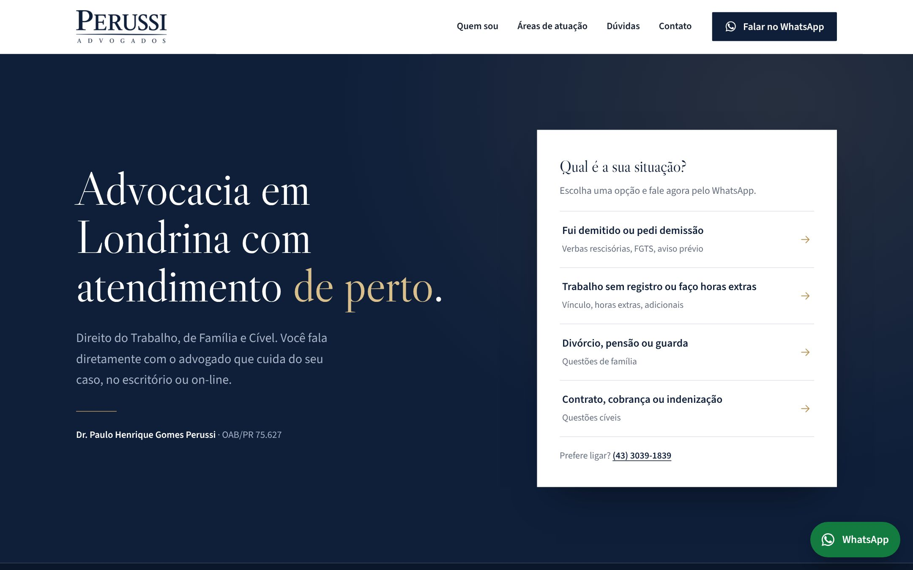
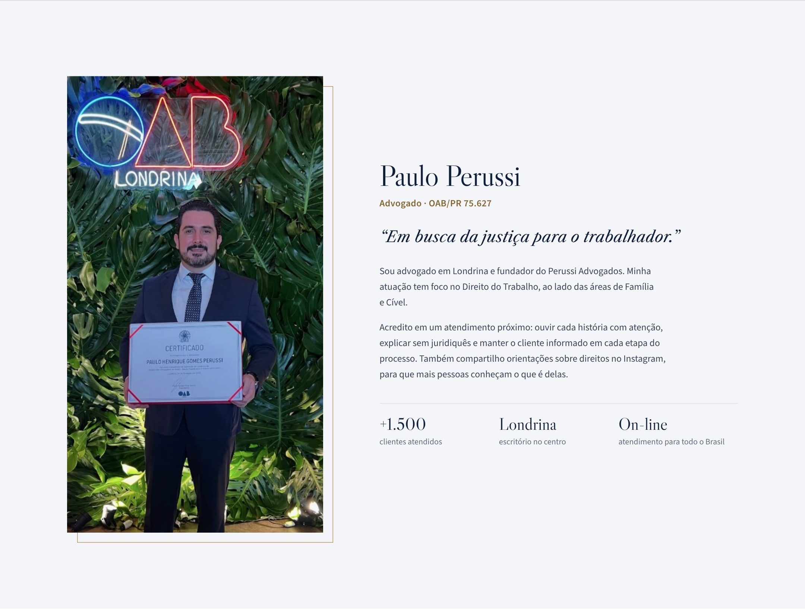
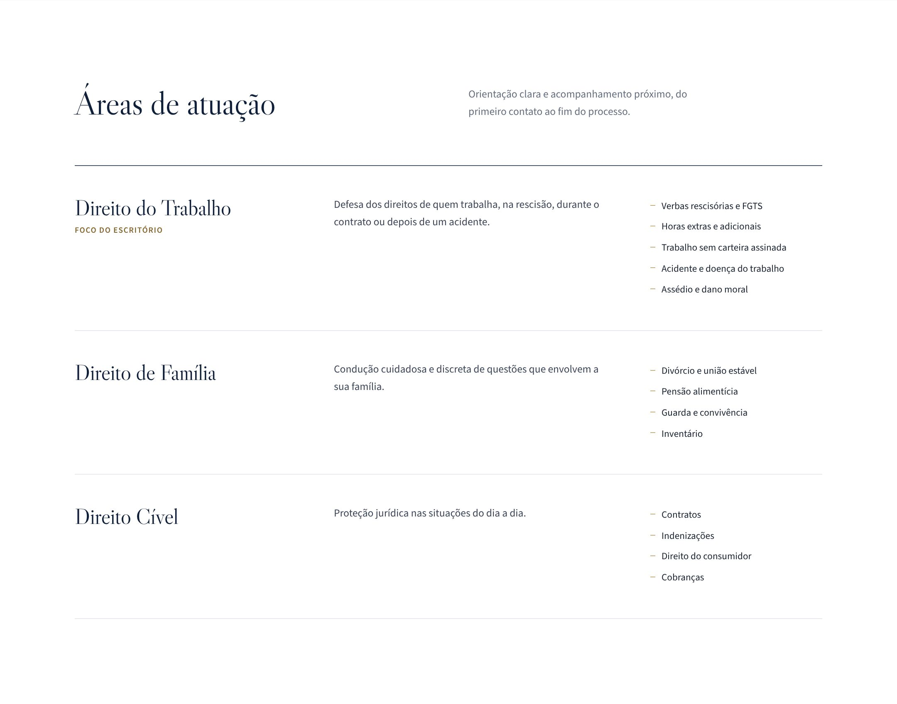
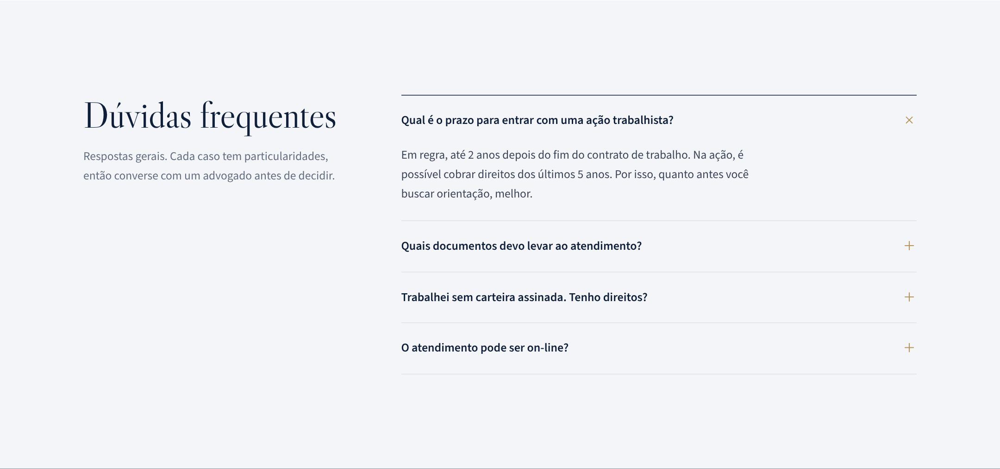
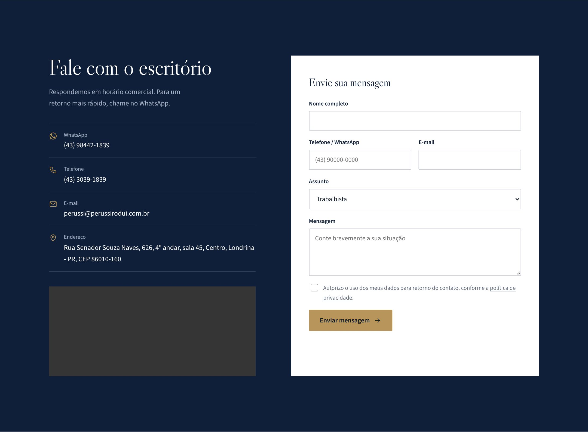
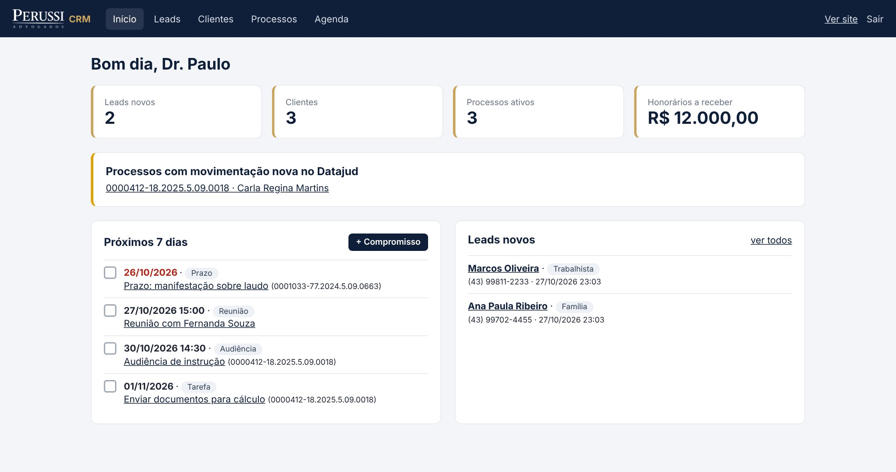
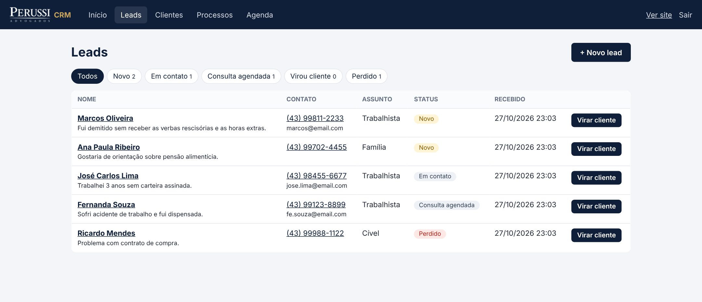
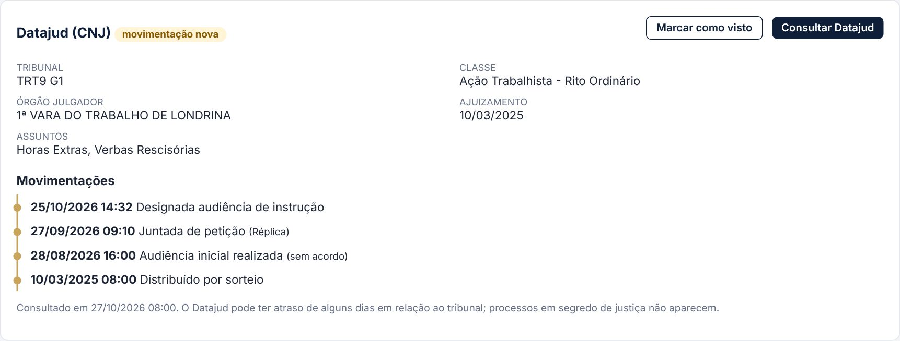
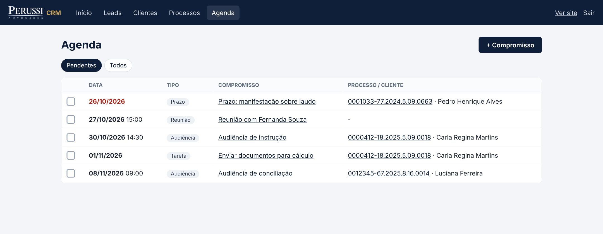

Seu escritório na internet e organizado em um só lugar.
Apresentação do novo site do Perussi Advogados e do sistema de gestão de clientes e processos, feito sob medida para o Dr. Paulo Perussi.
Site profissionalPara ser encontrado no Google e receber contatos pelo WhatsApp.
Gestão de clientesDo primeiro contato ao cliente, sem perder nenhum.
Processos e agendaMovimentações do Datajud (CNJ), prazos e audiências.
O site
Logo em destaque, visual sóbrio de escritório e um caminho curto até o WhatsApp. A primeira tela já pergunta qual é a situação do visitante.

Primeira tela do site no computador.
"Qual é a sua situação?"
O visitante escolhe o assunto (demissão, horas extras ou falta de registro, família ou cível) e o WhatsApp abre com a mensagem pronta. O contato chega já dizendo do que se trata.
Credibilidade à vista
Nome e OAB/PR 75.627 em destaque, endereço no centro de Londrina, horário de atendimento e atendimento presencial e on-line, como pede o Provimento 205/2021 da OAB.
Perussi Advogados · Site e sistema2
Quem atende e o que faz
O cliente quer saber com quem vai falar. O site mostra o Dr. Paulo e deixa claras as áreas de atuação.

Seção "Quem sou", com foto, OAB e apresentação.

Áreas de atuação: Direito do Trabalho (foco do escritório), Família e Cível.
Perussi Advogados · Site e sistema3
Informação que gera confiança
Dúvidas frequentes respondidas no próprio site e todos os canais de contato em um só lugar.

Dúvidas frequentes: prazo da ação trabalhista, documentos, trabalho sem carteira e atendimento on-line.

Contato: WhatsApp, telefone, e-mail, endereço com mapa e formulário que alimenta o sistema.
Perussi Advogados · Site e sistema4
Feito para o celular
A maioria dos clientes vai acessar pelo telefone. O site se adapta a qualquer tela.
O que vem incluso no site
- Botão de WhatsApp sempre visível, em todas as telas.
- Pronto para o Google: título, descrição e ficha de escritório de advocacia em Londrina para a busca local.
- Formulário de contato com proteção contra spam, que cai direto no sistema.
- LGPD: política de privacidade e consentimento no formulário.
- Regras da OAB: nome e inscrição visíveis, sem promessa de resultado.
- Carregamento rápido e fontes próprias, sem depender de serviços externos.
- Links para Instagram e Facebook do escritório.
Perussi Advogados · Site e sistema5
O sistema: visão geral
Uma área restrita, com login e senha, onde o Dr. Paulo acompanha tudo o que importa no dia.

Painel inicial (dados fictícios de demonstração).
- Números do escritório: contatos novos, clientes, processos ativos e honorários a receber.
- Aviso de movimentação nova nos processos acompanhados pelo Datajud.
- Próximos 7 dias: audiências, prazos e tarefas, com os atrasados em vermelho.
Perussi Advogados · Site e sistema6
Do contato ao cliente
Quem preenche o formulário do site entra automaticamente no sistema. Nenhum contato se perde.
1NovoO contato chega pelo site, ou é cadastrado à mão (WhatsApp, Instagram, indicação).
2Em contatoUm clique abre a conversa no WhatsApp.
3Consulta agendadaAcompanhamento de cada etapa.
4Virou clienteUm clique transforma o contato em cliente, com os dados já preenchidos.

Contatos organizados por etapa, com origem, assunto e data.
- Cadastro de clientes com CPF/CNPJ, contatos, endereço e observações.
- Busca por nome, CPF ou telefone.
- Todos os processos de cada cliente na mesma tela.
Perussi Advogados · Site e sistema7
Processos com Datajud
O sistema consulta a base pública do CNJ pelo número do processo e mostra as movimentações em uma linha do tempo.

Tela do processo: dados do tribunal e movimentações (dados fictícios de demonstração).
- Identifica o tribunal sozinho pelo número CNJ (TRT9, TJPR, TRF e outros).
- Classe, vara, assuntos e data de ajuizamento trazidos automaticamente.
- "Atualizar todos": consulta todos os processos ativos de uma vez e marca os que tiveram novidade.
- Honorários combinados e recebidos por processo, com total a receber no painel.
Perussi Advogados · Site e sistema8
Agenda de prazos e audiências
Compromissos ligados aos processos, para não perder nenhuma data.

Agenda com audiências, prazos, reuniões e tarefas.
- Quatro tipos: audiência, prazo, reunião e tarefa.
- Atrasados em destaque e marcação de concluído com um clique.
- Vínculo com o processo e com o cliente.
- Próximos 7 dias sempre no painel inicial.
Perussi Advogados · Site e sistema9
Próximos passos
O sistema foi pensado para crescer junto com o escritório. Depois de entrar no ar, ele pode ganhar novas funções conforme a necessidade.
Melhorias possíveis
- Datajud automático todos os dias, com aviso por e-mail ou WhatsApp.
- Documentos anexados a cada cliente e processo.
- Financeiro: parcelas, recibos e relatório mensal.
- Cobrança por Pix e boleto.
- Área do cliente para acompanhar o próprio processo.
- Outros usuários (secretária, estagiário) com permissões.
- Blog de artigos para aparecer mais no Google.
- Relatórios de contatos e de origem dos clientes.
Perussi Advogados · Site e sistema10